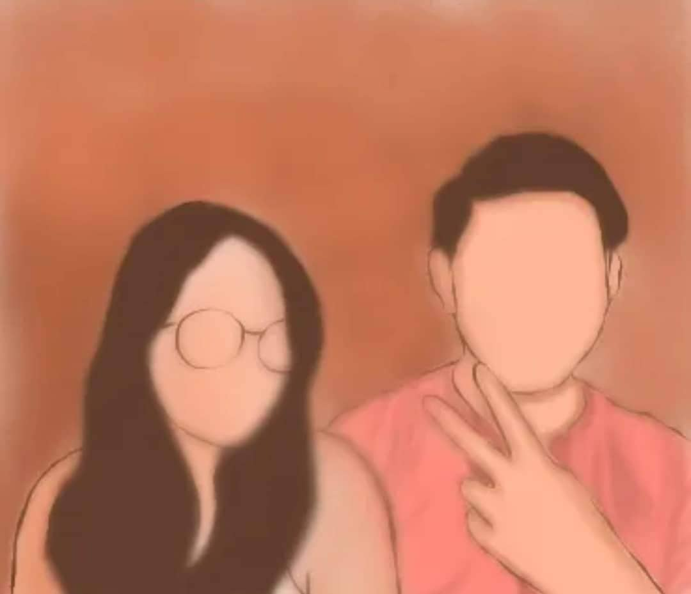
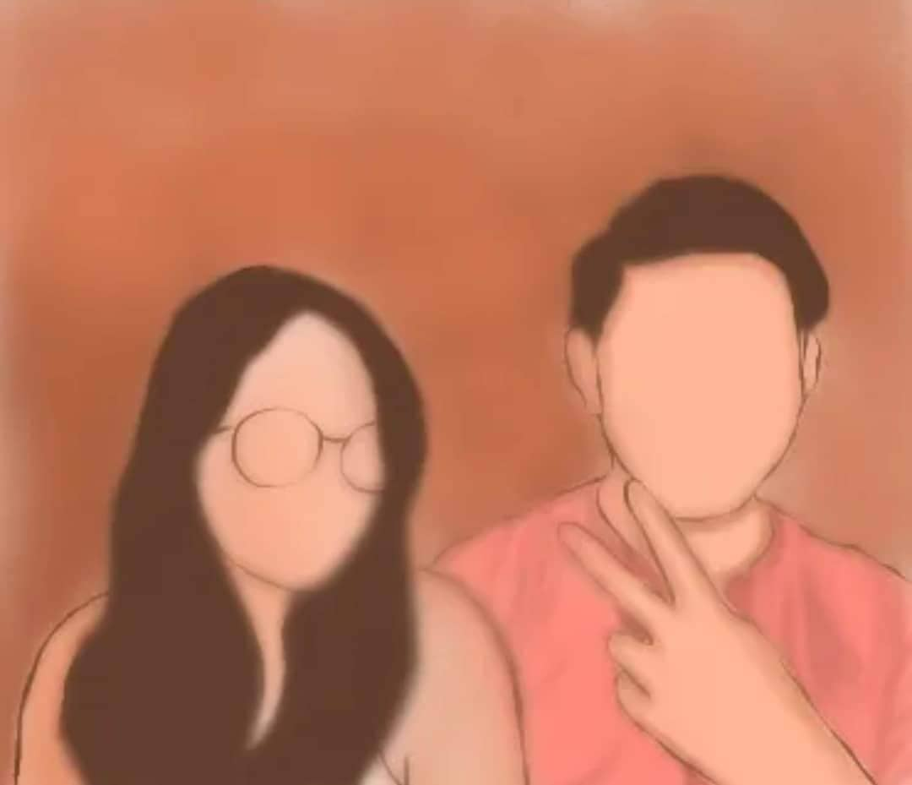

Bb? r u still awake? i can't sleep w/o sa tabi ko:( now i realize how hard my lufe kapag wala ka:( kumakain ako kaninang umiiyak na patago magisang gumagawa ng assignment na inaalala ka gusto kang tawagan gusto kang kausapin:(( bakit mo nagawa sakin to? :< sobrang hirap mong kalimutan hindi kna matanggal dito:< i want my bb back:( gusto kitang makasama ulit gusto kitang kausapin itama yung mali ko humingi ng patawad and all i don't wanna leave u:( never akong bumitaw sa isang relasyon :(( kung pangungulit at hindi pag intindi lang namn yung reason bakjt tayo mag hihiwalay kaya kong itama lahat ng yan:( ang hirap kase mahal tignan mo mahal na mahal pa natin yung isat isa then suddenly mag bbreak uo lang sa sobrang liit ng problema :( please bumalik kna:( patawarin mo na ako :< wag mo ako iiwan:< ang hirap tlga d ko alam gagawin ko:( inaalala parin kita iniisp gusto ko nalang umiyak buong gabi humihiling sa oanginoon na bigyan ako ng isa pang pagkakataon na itama ko lahat ng pagkakamali ko sayo:( i love you so much love mahal na mahal kita palagi kung pwde lang nga tawagan mo ako ngayon eh miss na miss ko na ikaw:( sobrang sobra:< im sorry if nasaktan kita kanina mahal🥺 i want u back:( wala akong kasama matulog:( wala akong kausap :( ayaw ko bumalik sa dating ako:( malungkot walang patutunguhan yung buhay tamad mag aral:( ikaw lang kse nag momotivate sakin gumawa ng lahat ng yun eh ikaw lang nag push sakin sa position na to sa pagiging top 1 sa klase i don't feel like makukuha ko yung mtaas na grado sa lunes i want u to comeback to me mahal😠Ikaw ang tibok ng puso ko, ang musika sa aking pagtawa, ang mga luha sa aking mga mata. Ikaw ang aking buong mundo - huwag kang umalis :( Ang paghingi ng paumanhin ay ang unang hakbang sa pagpapanumbalik ng nasirang relasyon. Ngayong sinabi ko na, tatanggapin mo ba?:( i know that d mo din kaya kapag wala ako:( d ka makatulog kapag wala ako mahal miss na muss na kita sobrang sobra please comeback :<

i love you my bb mwaaaa